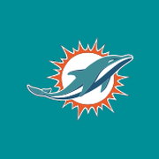

Deine Dolphins werden geladen …
Alle bestätigten Dolphins-Spiele in einem eigenen Kalender: Preseason, Regular Season und Dolphins-Playoffs. Neue Spiele und verlegte Anstoßzeiten werden automatisch aktualisiert. Dein Abo läuft auch in der nächsten Saison weiter – unabhängig vom hier ausgewählten Jahr.
Das Abo in der Kalender-App bestätigen. Falls es nicht direkt öffnet: Link kopieren und in Kalender → Kalender → Hinzufügen → Kalenderabonnement einsetzen.
Deine Farbe wählst du in Kalender → Kalender → ⓘ beim Dolphins-Kalender. Die Termine des Abos sind schreibgeschützt.
Anleitung zur einmaligen GitHub-Einrichtung
Der Kalender wird etwa alle sechs Stunden neu bereitgestellt. Wann Änderungen auf deinem iPhone erscheinen, bestimmt die Kalender-App. Bereits importierte Einzeltermine bleiben bestehen; entferne diese bei Bedarf, damit nichts doppelt erscheint.
Bitte JavaScript aktivieren, damit Spielplan und Ergebnisse geladen werden können.